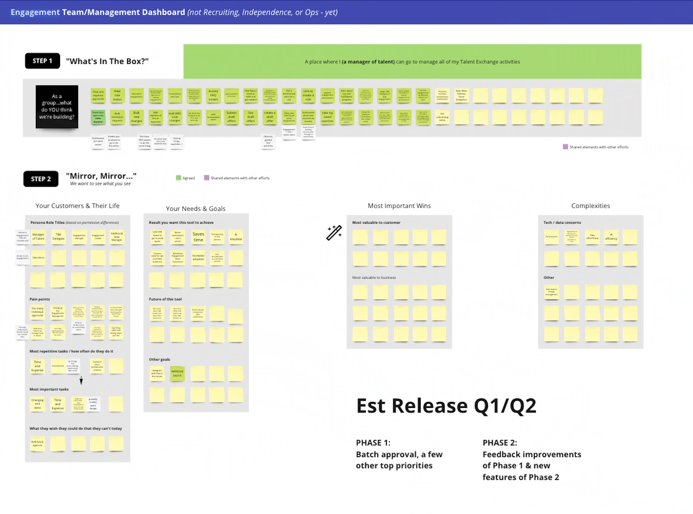
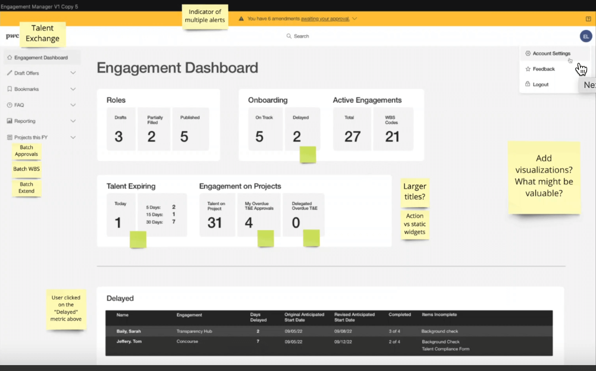
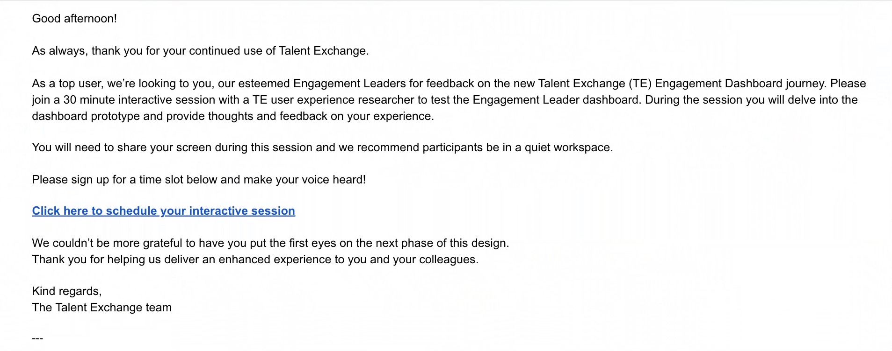
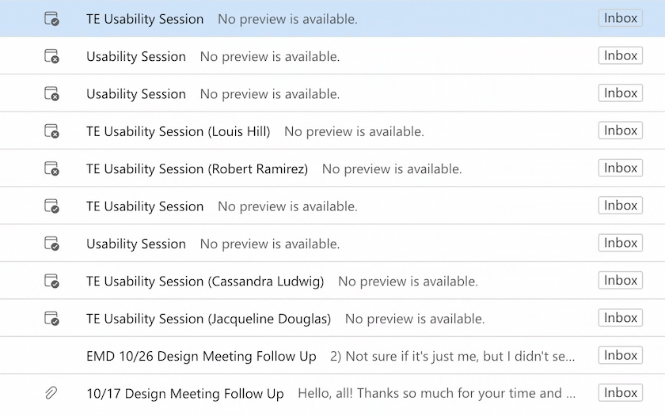
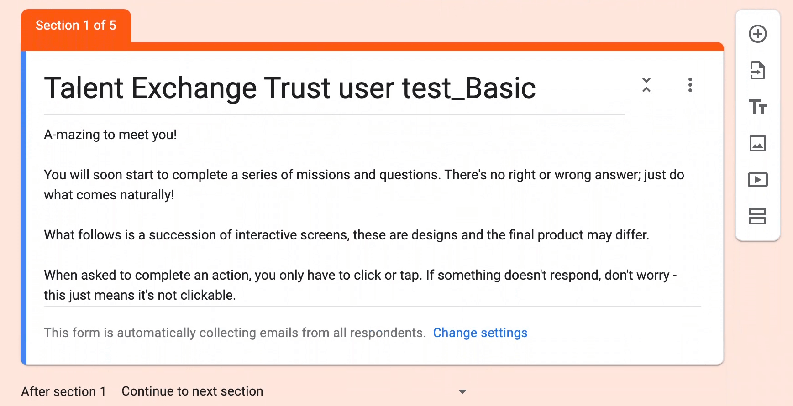
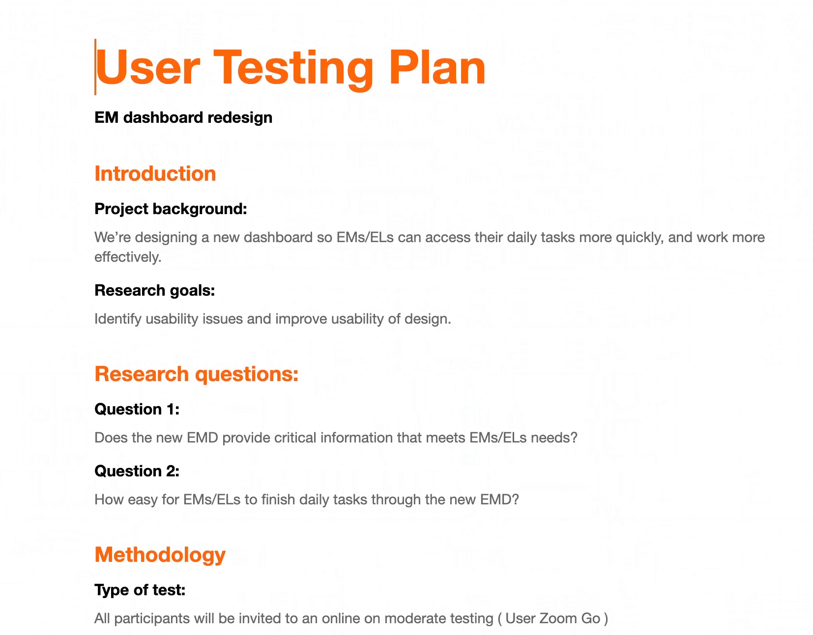
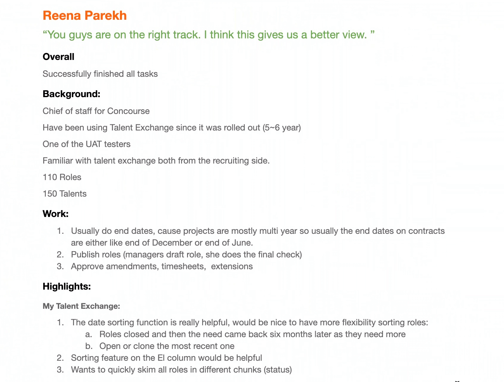

PWC
Leading Design at PwC
About
PwC Talent Exchange isn’t just a job board—it’s a mission-critical marketplace where businesses and top independent professionals come together to execute high-value consulting projects. Every month, over $40 million in engagements move through the platform, supporting a complex web of users: engagement managers overseeing contracts, finance teams managing budgets and payments, and independent professionals navigating onboarding and compliance.
With so many stakeholders, the tasks they handle range from sourcing talent and approving budgets to managing payment cycles and tracking project timelines. Some responsibilities overlap, while others are unique to each role, creating cross-functional dependencies that ripple across multiple systems. On the backend, Talent Exchange integrates with a maze of enterprise tools—systems for budgeting, payments, compliance, legal, and talent management—each with its own logic and constraints. The complexity was staggering, and for engagement managers, navigating this landscape was anything but intuitive.
Leading UX at Talent Exchange
When I joined, UX wasn’t just about designing screens—it was about designing the way design itself functioned within the organization. As the Product Design Lead, I took on more than just feature work. I built the design discipline from the ground up—hiring designers, structuring workflows, and defining how we prioritized UX enhancements in a way that balanced user needs with business goals.
To bring order to the chaos, I:
- Built and led a UX team, hiring designers and embedding design within cross-functional squads.
- Established a UX backlog, ensuring that research insights translated into prioritized product improvements.
- Created scalable design processes, standardizing file management, design documentation, and handoff practices.
- Integrated continuous user research, establishing a rhythm for gathering insights and validating designs.
- Ran stakeholder alignment sessions, bridging the gap between product, engineering, and business teams
case study: The Engagement Manager Dashboard: Turning Chaos into Clarity
How we redesigned PwC’s Engagement Manager Dashboard to bring clarity and control to a rapidly scaling platform.
My Role
- Leadership: I led the design team, collaborated with stakeholders (Product, Engineering, and Business), and made high-level decisions on design strategy.
- UX Strategy: I defined the overall design vision, prioritized features, and worked closely with the engineering team to ensure feasibility.
- Collaboration: Worked with product managers, business stakeholders, and engineers to align user needs with business objectives.
A Growing Problem
PwC’s Talent Exchange started as a promising experiment—a marketplace for top-tier independent professionals to connect with enterprise projects. It worked beautifully when the volume was manageable.
But as thousands of roles, contractors, and engagements flooded in, the once-efficient Engagement Manager Dashboard struggled to keep up.
Engagement Managers, who once had a clear view of their projects, now faced a wall of data.
- They spent hours digging for critical updates.
- Approvals got delayed.
- Expiring engagements slipped through the cracks.
- Onboarding bottlenecks turned into serious operational risks.
It was clear: What worked yesterday no longer worked today.
Stepping In
As the Lead product Designer, I took on the challenge of redesigning the dashboard to handle the new scale. But this wasn’t just a UI problem—it was a fundamental workflow problem.
- Engagement Managers needed clarity—a way to cut through the noise and focus on what truly mattered.
- The business needed efficiency—to reduce manual tracking and ensure engagements flowed seamlessly.
- Engineers needed a scalable solution that wouldn’t buckle under increasing data loads.
Finding the Signal in the Noise
We knew that the best way to fix the problem was to listen first, design later. So we went straight to the source: the Engagement Managers themselves.
I led deep-dive remote interviews with teams across multiple regions. Using Teams screen shares and session recordings, we observed how they navigated the platform in real time, watched their workflows unfold, and mapped out their daily challenges.
- 80% of their time was spent on just a few repetitive tasks—approvals, tracking ending engagements, onboarding follow-ups, and role assignments.
- But these critical tasks weren’t in one place. Instead, managers had to jump between multiple pages, dig through reports, and cross-reference emails just to get through their day.
We needed to go deeper. Observing their pain points was one thing—but we needed them to define their ideal workflow, in their own words.
The Workshop
To break the problem down, we organized a collaborative online workshop with engagement managers from different teams. Since our participants were spread across multiple regions, we ran the session using Miro and Teams, ensuring that everyone could actively participate, no matter where they were.
We gave them a simple challenge:
"List out every task you do in a day. One task per sticky note."
Participants started individually, adding digital sticky notes to a shared board—everything from approving contracts to following up on onboarding delays. Once we had a comprehensive list, we asked them to sort tasks into categories, grouping similar ones together.
As managers discussed and debated, clear patterns emerged:
- Some tasks were quick but frequent, like T&E approvals.
- Others required cross-team coordination, like publishing roles.
- A few were high-priority but often buried, like tracking expiring engagements.
Despite working in different regions, their pain points were nearly identical. They weren’t struggling with what to do—they were struggling with how to stay on top of it all.
One manager put it perfectly:
"I don’t need to see everything—I just need to know what needs my attention right now."
That was the turning point.
The Breakthrough
We reimagined the dashboard around a simple principle:
Urgency and action should drive design.
Instead of presenting everything equally, we built the interface to function like an air traffic control center—highlighting what was most critical at any given moment.
At the heart of this were four dynamic widgets, each serving as an immediate "to-do list" for Engagement Managers:
- My Talent Exchange → A high-level snapshot of engaged talent and roles in progress.
- T&E Approvals → Urgent approvals that need immediate action.
- Engagements Ending → A countdown of projects nearing completion, color-coded by urgency.
- Onboarding → A real-time status of new hires—who’s at risk, who’s delayed, and where action is needed.
Each widget wasn’t just informational—it was actionable. One click took managers exactly where they needed to go.



Iterative Testing: A Continuous Feedback Loop
Designing in a vacuum was never an option. Given the complexity of engagement management, we knew that continuous user testing was key to ensuring the dashboard was not only usable but also genuinely effective.
Engagement-Driven Usability Testing
At every stage of the design process, we validated our decisions with real Engagement Managers cross different regions. After finalizing the wireframes, we ran lightweight usability tests, walking users through key workflows and capturing immediate feedback. Once we moved into high-fidelity prototypes, we conducted more in-depth testing to refine interactions and optimize information hierarchy.
But there was a challenge—time zones. With Engagement Managers spread across multiple regions, scheduling tests wasn’t always straightforward. To solve this, we made the process more collaborative. I worked closely with our team to explore different approaches, opening up self-signups for interested participants. The response was overwhelming—far more Engagement Managers signed up than we expected.
 Building a Community Around User Testing
Instead of turning people away, we saw this as an opportunity. We created a User Test Community List, where participants could take turns joining different rounds of testing across various design phases. This gave us a diverse pool of testers while ensuring no single group was overburdened. It also had an unexpected benefit—it fostered a sense of ownership among Engagement Managers, making them feel like active contributors to the product’s evolution.
  A/B Testing for Optimization
Beyond usability testing, we also experimented with A/B testing to refine the dashboard’s effectiveness. We tested different widget placements, information hierarchy, and action-driven layouts to see what resonated best. The insights from these tests directly informed our final design, helping us prioritize clarity, efficiency, and engagement.
By the time we rolled out the final dashboard, we weren’t just launching a new feature—we were delivering a tool that had been shaped, tested, and validated by the very people who would use it daily.
Bringing the Team Along
Big redesigns don’t happen in isolation. They require alignment—across product, engineering, business leadership, and of course, the users. I ran bi-weekly stakeholder reviews, ensuring every decision was grounded in both user needs and business goals.
- Product teams wanted to increase efficiency metrics—so we designed with time-on-task reduction in mind.
- Engineers needed performance optimizations—so we refined data queries to keep the dashboard lightning-fast.
- Business leaders wanted better engagement visibility—so we introduced drill-down views that allowed for deeper exploration.
When pushback came—like concerns over too much change, too fast—I worked closely with leadership to phase the rollout, launching in waves and incorporating early user feedback.
Results & Impact

The new dashboard transformed how Engagement Managers worked.
- 35% Reduction in time spent managing engagements.
- 50% Faster approvals, cutting down bottlenecks in project staffing.
- 85% Adoption Rate within the first three months—users weren’t just using it, they loved it.
- But the real win? Managers felt in control again. Instead of wrestling with the system, the system worked for them.
- 35% Reduction in Task Completion Time: Engagement Managers can now complete common tasks in less time, thanks to streamlined workflows.
- 50% Faster Role Assignments: The action-driven design allowed managers to quickly assign contractors to roles without additional navigation.
- 85% Adoption Rate in the first 3 months, demonstrating that the dashboard was highly embraced by users.
- 20% Improvement in User Satisfaction as measured by post-launch surveys, with users praising the clarity and actionability of the new design.